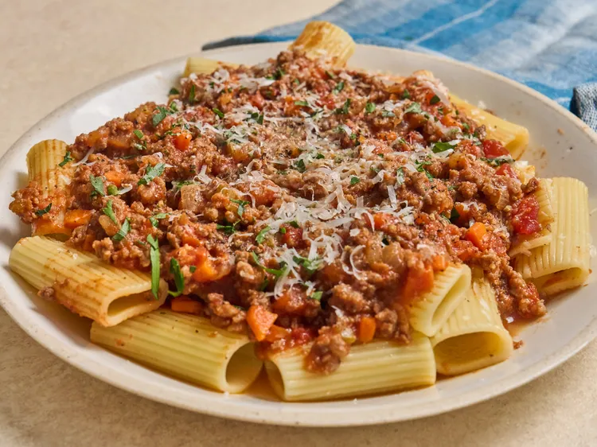

Heat a Dutch oven over medium-high heat. Add butter and pancetta and cook, stirring occasionally, until crisp, about 5 minutes. Add ground beef and sausage and crumble with a wooden spoon or a potato masher. Cook undisturbed until browned around the edges, about 3 minutes. Stir and continue to cook until browned and crumbled, about 4 minutes. Add onion, celery, and carrots and cook, stirring occasionally, until vegetables are tender. Pour in wine and stir with a wooden spoon to loosen any browned bits from the bottom or sides of the pot. Stir in tomatoes, stock, and milk until well combined. Add bay leaf, season with salt and pepper, and stir. Bring mixture to a simmer, then reduce heat to medium-low. Partially cover and simmer sauce for 2 to 2 1/2 hours, stirring occasionally. Season to taste and serve over pasta and topped with fresh parsley and freshly grated Parmesan cheese.